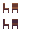
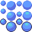

Exporting 4 frame animations as a gif file.
Can use animation onion skin to replicate existing sprites slighlty different.

When drawing lines, making thick lines by connecting pixels not diagonally as well: `Doubles`
Continuous checkbox in the paint bucket tool: Useful for replacing colors.

Not just changing color value to make shades. Changing actual hue is better.
Moving color closer to yellow makes it brighter.
Moving color closer to blue makes it darker.

Drawing spheres is about making the specular highlight, back shadow proportional and surface reflection.
Effect can be improved with dithering.

Multiple ways of shading objects. Chair for example.
Similar as shading, use 3D object with similar shape as reference.
Check if there are global reflections or just simple lighting. (e.g. ceiling/floor reflecting)
Useful technique to create shading without adding different color levels to the sprite.
Different patterns to create different density of each component color.